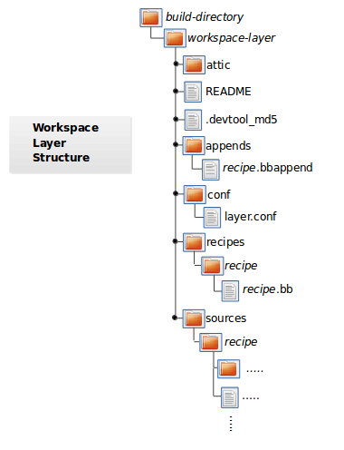

9 devtool Quick Reference
The devtool command-line tool provides a number of features that
help you build, test, and package software. This command is available
alongside the bitbake command. Additionally, the devtool command
is a key part of the extensible SDK.
This chapter provides a Quick Reference for the devtool command. For
more information on how to apply the command when using the extensible
SDK, see the "Using the Extensible SDK" chapter in the Yocto
Project Application Development and the Extensible Software Development
Kit (eSDK) manual.
9.1 Getting Help
The devtool command line is organized similarly to Git in that it
has a number of sub-commands for each function. You can run
devtool --help to see all the commands:
$ devtool --help
NOTE: Starting bitbake server...
usage: devtool [--basepath BASEPATH] [--bbpath BBPATH] [-d] [-q] [--color COLOR] [-h] <subcommand> ...
OpenEmbedded development tool
options:
--basepath BASEPATH Base directory of SDK / build directory
--bbpath BBPATH Explicitly specify the BBPATH, rather than getting it from the metadata
-d, --debug Enable debug output
-q, --quiet Print only errors
--color COLOR Colorize output (where COLOR is auto, always, never)
-h, --help show this help message and exit
subcommands:
Beginning work on a recipe:
add Add a new recipe
modify Modify the source for an existing recipe
upgrade Upgrade an existing recipe
Getting information:
status Show workspace status
latest-version Report the latest version of an existing recipe
check-upgrade-status Report upgradability for multiple (or all) recipes
search Search available recipes
Working on a recipe in the workspace:
build Build a recipe
ide-sdk Setup the SDK and configure the IDE
rename Rename a recipe file in the workspace
edit-recipe Edit a recipe file
find-recipe Find a recipe file
configure-help Get help on configure script options
update-recipe Apply changes from external source tree to recipe
reset Remove a recipe from your workspace
finish Finish working on a recipe in your workspace
Testing changes on target:
deploy-target Deploy recipe output files to live target machine
undeploy-target Undeploy recipe output files in live target machine
build-image Build image including workspace recipe packages
Advanced:
create-workspace Set up workspace in an alternative location
import Import exported tar archive into workspace
export Export workspace into a tar archive
extract Extract the source for an existing recipe
sync Synchronize the source tree for an existing recipe
menuconfig Alter build-time configuration for a recipe
Use devtool <subcommand> --help to get help on a specific command
As directed in the general help output, you can
get more syntax on a specific command by providing the command name and
using --help:
$ devtool add --help
NOTE: Starting bitbake server...
usage: devtool add [-h] [--same-dir | --no-same-dir] [--fetch URI] [--npm-dev] [--no-pypi] [--version VERSION] [--no-git] [--srcrev SRCREV | --autorev]
[--srcbranch SRCBRANCH] [--binary] [--also-native] [--src-subdir SUBDIR] [--mirrors] [--provides PROVIDES]
[recipename] [srctree] [fetchuri]
Adds a new recipe to the workspace to build a specified source tree. Can optionally fetch a remote URI and unpack it to create the source tree.
arguments:
recipename Name for new recipe to add (just name - no version, path or extension). If not specified, will attempt to auto-detect it.
srctree Path to external source tree. If not specified, a subdirectory of /media/build1/poky/build/workspace/sources will be used.
fetchuri Fetch the specified URI and extract it to create the source tree
options:
-h, --help show this help message and exit
--same-dir, -s Build in same directory as source
--no-same-dir Force build in a separate build directory
--fetch URI, -f URI Fetch the specified URI and extract it to create the source tree (deprecated - pass as positional argument instead)
--npm-dev For npm, also fetch devDependencies
--no-pypi Do not inherit pypi class
--version VERSION, -V VERSION
Version to use within recipe (PV)
--no-git, -g If fetching source, do not set up source tree as a git repository
--srcrev SRCREV, -S SRCREV
Source revision to fetch if fetching from an SCM such as git (default latest)
--autorev, -a When fetching from a git repository, set SRCREV in the recipe to a floating revision instead of fixed
--srcbranch SRCBRANCH, -B SRCBRANCH
Branch in source repository if fetching from an SCM such as git (default master)
--binary, -b Treat the source tree as something that should be installed verbatim (no compilation, same directory structure). Useful with binary packages e.g. RPMs.
--also-native Also add native variant (i.e. support building recipe for the build host as well as the target machine)
--src-subdir SUBDIR Specify subdirectory within source tree to use
--mirrors Enable PREMIRRORS and MIRRORS for source tree fetching (disable by default).
--provides PROVIDES, -p PROVIDES
Specify an alias for the item provided by the recipe. E.g. virtual/libgl
9.2 The Workspace Layer Structure
devtool uses a "Workspace" layer in which to accomplish builds. This
layer is not specific to any single devtool command but is rather a
common working area used across the tool.
The following figure shows the workspace structure:


attic - A directory created if devtool believes it must preserve
anything when you run "devtool reset". For example, if you
run "devtool add", make changes to the recipe, and then
run "devtool reset", devtool takes notice that the file has
been changed and moves it into the attic should you still
want the recipe.
README - Provides information on what is in workspace layer and how to
manage it.
.devtool_md5 - A checksum file used by devtool.
appends - A directory that contains *.bbappend files, which point to
external source.
conf - A configuration directory that contains the layer.conf file.
recipes - A directory containing recipes. This directory contains a
folder for each directory added whose name matches that of the
added recipe. devtool places the recipe.bb file
within that sub-directory.
sources - A directory containing a working copy of the source files used
when building the recipe. This is the default directory used
as the location of the source tree when you do not provide a
source tree path. This directory contains a folder for each
set of source files matched to a corresponding recipe.
9.3 Adding a New Recipe to the Workspace Layer
Use the devtool add command to add a new recipe to the workspace
layer. The recipe you add should not exist --- devtool creates it for
you. The source files the recipe uses should exist in an external area.
The following example creates and adds a new recipe named jackson to
a workspace layer the tool creates. The source code built by the recipes
resides in /home/user/sources/jackson:
$ devtool add jackson /home/user/sources/jackson
If you add a recipe and the workspace layer does not exist, the command creates the layer and populates it as described in "The Workspace Layer Structure" section.
Running devtool add when the workspace layer exists causes the tool
to add the recipe, append files, and source files into the existing
workspace layer. The .bbappend file is created to point to the
external source tree.
Nota
If your recipe has runtime dependencies defined, you must be sure that these packages exist on the target hardware before attempting to run your application. If dependent packages (e.g. libraries) do not exist on the target, your application, when run, will fail to find those functions. For more information, see the "Deploying Your Software on the Target Machine" section.
By default, devtool add uses the latest revision (i.e. master) when
unpacking files from a remote URI. In some cases, you might want to
specify a source revision by branch, tag, or commit hash. You can
specify these options when using the devtool add command:
To specify a source branch, use the
--srcbranchoption:$ devtool add --srcbranch blacksail jackson /home/user/sources/jackson
In the previous example, you are checking out the blacksail branch.
To specify a specific tag or commit hash, use the
--srcrevoption:$ devtool add --srcrev yocto-$DISTRO; jackson /home/user/sources/jackson $ devtool add --srcrev some_commit_hash /home/user/sources/jackson
The previous examples check out the yocto-$DISTRO; tag and the commit associated with the some_commit_hash hash.
Nota
If you prefer to use the latest revision every time the recipe is
built, use the options --autorev or -a.
9.4 Extracting the Source for an Existing Recipe
Use the devtool extract command to extract the source for an
existing recipe. When you use this command, you must supply the root
name of the recipe (i.e. no version, paths, or extensions), and you must
supply the directory to which you want the source extracted.
Additional command options let you control the name of a development branch into which you can checkout the source and whether or not to keep a temporary directory, which is useful for debugging.
9.5 Synchronizing a Recipe's Extracted Source Tree
Use the devtool sync command to synchronize a previously extracted
source tree for an existing recipe. When you use this command, you must
supply the root name of the recipe (i.e. no version, paths, or
extensions), and you must supply the directory to which you want the
source extracted.
Additional command options let you control the name of a development branch into which you can checkout the source and whether or not to keep a temporary directory, which is useful for debugging.
9.6 Modifying an Existing Recipe
Use the devtool modify command to begin modifying the source of an
existing recipe. This command is very similar to the
add command
except that it does not physically create the recipe in the workspace
layer because the recipe already exists in an another layer.
The devtool modify command extracts the source for a recipe, sets it
up as a Git repository if the source had not already been fetched from
Git, checks out a branch for development, and applies any patches from
the recipe as commits on top. You can use the following command to
checkout the source files:
$ devtool modify recipe
Using the above command form, devtool uses the existing recipe's
SRC_URI statement to locate the upstream source,
extracts the source into the default sources location in the workspace.
The default development branch used is "devtool".
9.7 Edit an Existing Recipe
Use the devtool edit-recipe command to run the default editor, which
is identified using the EDITOR variable, on the specified recipe.
When you use the devtool edit-recipe command, you must supply the
root name of the recipe (i.e. no version, paths, or extensions). Also,
the recipe file itself must reside in the workspace as a result of the
devtool add or devtool upgrade commands.
9.8 Updating a Recipe
Use the devtool update-recipe command to update your recipe with
patches that reflect changes you make to the source files. For example,
if you know you are going to work on some code, you could first use the
devtool modify command to extract
the code and set up the workspace. After which, you could modify,
compile, and test the code.
When you are satisfied with the results and you have committed your
changes to the Git repository, you can then run the
devtool update-recipe to create the patches and update the recipe:
$ devtool update-recipe recipe
If you run the devtool update-recipe
without committing your changes, the command ignores the changes.
Often, you might want to apply customizations made to your software in
your own layer rather than apply them to the original recipe. If so, you
can use the -a or --append option with the
devtool update-recipe command. These options allow you to specify
the layer into which to write an append file:
$ devtool update-recipe recipe -a base-layer-directory
The *.bbappend file is created at the
appropriate path within the specified layer directory, which may or may
not be in your build/conf/bblayers.conf file. If an append file already exists,
the command updates it appropriately.
9.9 Checking on the Upgrade Status of a Recipe
Upstream recipes change over time. Consequently, you might find that you need to determine if you can upgrade a recipe to a newer version.
To check on the upgrade status of a recipe, you can use the
devtool latest-version recipe command, which quickly shows the current
version and the latest version available upstream. To get a more global
picture, use the devtool check-upgrade-status command, which takes a
list of recipes as input, or no arguments, in which case it checks all
available recipes. This command will only print the recipes for which
a new upstream version is available. Each such recipe will have its current
version and latest upstream version, as well as the email of the maintainer
and any additional information such as the commit hash or reason for not
being able to upgrade it, displayed in a table.
This upgrade checking mechanism relies on the optional UPSTREAM_CHECK_URI, UPSTREAM_CHECK_REGEX, UPSTREAM_CHECK_GITTAGREGEX, UPSTREAM_CHECK_COMMITS and UPSTREAM_VERSION_UNKNOWN variables in package recipes.
Nota
Most of the time, the above variables are unnecessary. They are only required when upstream does something unusual, and default mechanisms cannot find the new upstream versions.
For the
oe-corelayer, recipe maintainers come from the maintainers.inc file.If the recipe is using the Git Fetcher (git://) rather than a tarball, the commit hash points to the commit that matches the recipe's latest version tag, or in the absence of suitable tags, to the latest commit (when UPSTREAM_CHECK_COMMITS set to
1in the recipe).
As with all devtool commands, you can get help on the individual
command:
$ devtool check-upgrade-status -h
NOTE: Starting bitbake server...
usage: devtool check-upgrade-status [-h] [--all] [recipe [recipe ...]]
Prints a table of recipes together with versions currently provided by recipes, and latest upstream versions, when there is a later version available
arguments:
recipe Name of the recipe to report (omit to report upgrade info for all recipes)
options:
-h, --help show this help message and exit
--all, -a Show all recipes, not just recipes needing upgrade
Unless you provide a specific recipe name on the command line, the command checks all recipes in all configured layers.
Here is a partial example table that reports on all the recipes:
$ devtool check-upgrade-status
...
INFO: bind 9.16.20 9.16.21 Armin Kuster <akuster808@gmail.com>
INFO: inetutils 2.1 2.2 Tom Rini <trini@konsulko.com>
INFO: iproute2 5.13.0 5.14.0 Changhyeok Bae <changhyeok.bae@gmail.com>
INFO: openssl 1.1.1l 3.0.0 Alexander Kanavin <alex.kanavin@gmail.com>
INFO: base-passwd 3.5.29 3.5.51 Anuj Mittal <anuj.mittal@intel.com> cannot be updated due to: Version 3.5.38 requires cdebconf for update-passwd utility
...
Notice the reported reason for not upgrading the base-passwd recipe.
In this example, while a new version is available upstream, you do not
want to use it because the dependency on cdebconf is not easily
satisfied. Maintainers can explicit the reason that is shown by adding
the RECIPE_NO_UPDATE_REASON variable to the corresponding recipe.
See the base-passwd_*.bb
recipe for an example:
RECIPE_NO_UPDATE_REASON = "Version 3.5.38 requires cdebconf for update-passwd utility"
Last but not least, you may set UPSTREAM_VERSION_UNKNOWN to 1
in a recipe when there's currently no way to determine its latest upstream
version.
9.10 Upgrading a Recipe
As software matures, upstream recipes are upgraded to newer versions. As
a developer, you need to keep your local recipes up-to-date with the
upstream version releases. There are several ways of upgrading recipes.
You can read about them in the "Upgrading Recipes"
section of the Yocto Project Development Tasks Manual. This section
overviews the devtool upgrade command.
Before you upgrade a recipe, you can check on its upgrade status. See the "Checking on the Upgrade Status of a Recipe" section for more information.
The devtool upgrade command upgrades an existing recipe to a more
recent version of the recipe upstream. The command puts the upgraded
recipe file along with any associated files into a "workspace" and, if
necessary, extracts the source tree to a specified location. During the
upgrade, patches associated with the recipe are rebased or added as
needed.
When you use the devtool upgrade command, you must supply the root
name of the recipe (i.e. no version, paths, or extensions), and you must
supply the directory to which you want the source extracted. Additional
command options let you control things such as the version number to
which you want to upgrade (i.e. the PV), the source
revision to which you want to upgrade (i.e. the
SRCREV), whether or not to apply patches, and so
forth.
You can read more on the devtool upgrade workflow in the
"Use devtool upgrade to Create a Version of the Recipe that Supports a Newer Version of the Software"
section in the Yocto Project Application Development and the Extensible
Software Development Kit (eSDK) manual. You can also see an example of
how to use devtool upgrade in the "Using devtool upgrade"
section in the Yocto Project Development Tasks Manual.
9.11 Resetting a Recipe
Use the devtool reset command to remove a recipe and its
configuration (e.g. the corresponding .bbappend file) from the
workspace layer. Realize that this command deletes the recipe and the
append file. The command does not physically move them for you.
Consequently, you must be sure to physically relocate your updated
recipe and the append file outside of the workspace layer before running
the devtool reset command.
If the devtool reset command detects that the recipe or the append
files have been modified, the command preserves the modified files in a
separate "attic" subdirectory under the workspace layer.
Here is an example that resets the workspace directory that contains the
mtr recipe:
$ devtool reset mtr
NOTE: Cleaning sysroot for recipe mtr...
NOTE: Leaving source tree /home/scottrif/bitbake-builds/build/workspace/sources/mtr as-is; if you no longer need it then please delete it manually
$
9.12 Finish Working on a Recipe
Use the devtool finish command to push any committed changes to the
specified recipe in the specified layer and remove it from your workspace.
This is roughly equivalent to the devtool update-recipe command followed by
the devtool reset command. The changes must have been committed to the git
repository created by devtool. Here is an example:
$ devtool finish recipe /path/to/custom/layer
9.13 Building Your Recipe
Use the devtool build command to build your recipe. The
devtool build command is equivalent to the
bitbake -c populate_sysroot command.
When you use the devtool build command, you must supply the root
name of the recipe (i.e. do not provide versions, paths, or extensions).
You can use either the -s or the --disable-parallel-make options to
disable parallel makes during the build. Here is an example:
$ devtool build recipe
9.14 Building dell'Immagine
Use the devtool build-image command to build an image, extending it
to include packages from recipes in the workspace. Using this command is
useful when you want an image that ready for immediate deployment onto a
device for testing. For proper integration into a final image, you need
to edit your custom image recipe appropriately.
When you use the devtool build-image command, you must supply the
name of the image. This command has no command line options:
$ devtool build-image image
9.15 Deploying Your Software on the Target Machine
Use the devtool deploy-target command to deploy the recipe's build
output to the live target machine:
$ devtool deploy-target recipe target
The target is the address of the target machine, which must be running
an SSH server (i.e. user@hostname[:destdir]).
This command deploys all files installed during the do_install task. Furthermore, you do not need to have package management enabled within the target machine. If you do, the package manager is bypassed.
Nota
The deploy-target functionality is for development only. You
should never use it to update an image that will be used in
production.
Some conditions could prevent a deployed application from behaving as expected. When both of the following conditions are met, your application has the potential to not behave correctly when run on the target:
You are deploying a new application to the target and the recipe you used to build the application had correctly defined runtime dependencies.
The target does not physically have the packages on which the application depends installed.
If both of these conditions are met, your application will not behave as
expected. The reason for this misbehavior is because the
devtool deploy-target command does not deploy the packages (e.g.
libraries) on which your new application depends. The assumption is that
the packages are already on the target. Consequently, when a runtime
call is made in the application for a dependent function (e.g. a library
call), the function cannot be found.
Avvertimento
Runtime dependencies can be explicitly listed in the RDEPENDS
variable, but may also be the result of a DEPENDS assignment in your
application's recipe. This is usually the case when your application depends
on libraries for compilation: these libraries are listed as build-time
dependencies in the DEPENDS variable in your application's recipe.
However these may also be runtime dependencies if they install shared objects
on which your application will dynamically link to at runtime (e.g. shared
libraries ending with .so).
These runtime dependencies are automatically resolved by the
OpenEmbedded Build System during the packaging phase. Since
devtool ignores packaging dependencies, they will not be installed
automatically with devtool deploy-target.
For more information on how the OpenEmbedded Build System handles packaging, see the Dipendenze di Runtime Aggiunte Automaticamente section of the Yocto Project Overview and Concepts Manual.
To be sure you have all the dependencies local to the target, you need to be sure that the packages are pre-deployed (installed) on the target before attempting to run your application.
9.16 Removing Your Software from the Target Machine
Use the devtool undeploy-target command to remove deployed build
output from the target machine. For the devtool undeploy-target
command to work, you must have previously used the
"devtool deploy-target"
command:
$ devtool undeploy-target recipe target
The target is the
address of the target machine, which must be running an SSH server (i.e.
user@hostname).
9.17 Creating the Workspace Layer in an Alternative Location
Use the devtool create-workspace command to create a new workspace
layer in your Build Directory. When you create a
new workspace layer, it is populated with the README file and the
conf directory only.
The following example creates a new workspace layer in your current working and by default names the workspace layer "workspace":
$ devtool create-workspace
You can create a workspace layer anywhere by supplying a pathname with the command. The following command creates a new workspace layer named "new-workspace":
$ devtool create-workspace /home/scottrif/new-workspace
9.18 Get the Status of the Recipes in Your Workspace
Use the devtool status command to list the recipes currently in your
workspace. Information includes the paths to their respective external
source trees.
The devtool status command has no command-line options:
$ devtool status
Here is sample output after using
devtool add
to create and add the mtr_0.86.bb recipe to the workspace directory:
$ devtool status
mtr:/home/scottrif/bitbake-builds/build/workspace/sources/mtr (/home/scottrif/bitbake-builds/build/workspace/recipes/mtr/mtr_0.86.bb)
$
9.19 Search for Available Target Recipes
Use the devtool search command to search for available target
recipes. The command matches the recipe name, package name, description,
and installed files. The command displays the recipe name as a result of
a match.
When you use the devtool search command, you must supply a keyword.
The command uses the keyword when searching for a match.
Alternatively, the devtool find-recipe command can be used to search for
recipe files instead of recipe names. Likewise, you must supply a keyword.
9.20 Get Information on Recipe Configuration Scripts
Use the devtool configure-help command to get help on the configuration
script options for a given recipe. You must supply the recipe name to the
command. For example, it shows the output of ./configure --help for
autotools-based recipes.
The configure-help command will also display the configuration options
currently in use, including the ones passed through the EXTRA_OECONF
variable.
9.21 Generate an IDE Configuration for a Recipe
The devtool ide-sdk automatically creates an IDE configuration and SDK to
work on a given recipe. Depending on the --mode parameter, different types
of SDKs are generated:
modifiedmode: this creates an SDK and generates an IDE configuration in the workspace directory.sharedmode: this creates a cross-compiling toolchain and the corresponding shared sysroot directories of the supplied recipe(s).
The --target option can be used to specify a username@hostname string
and create a remote debugging configuration for the recipe. Similarly to
devtool deploy-target, it requires an SSH server running on the target.
For further details on the devtool ide-sdk command, see the
"Using the Extensible SDK" chapter in the Yocto Project Application
Development and the Extensible Software Development Kit (eSDK) manual.